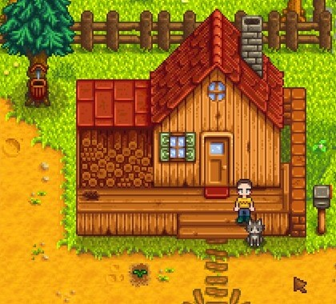

Homepage
This is the Stardew Starters Guide! This website will help you know what to do in each season, what to plant, all while still enjoying the game! This might be useful to you if you are:
- New to Stardew Valley?
- Are a casual player looking to earn more money?
- Looking to find which crops suit which season best?